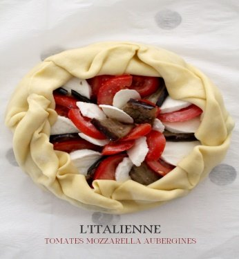

Tarte italienne
Ingredients
×
- 1 c. à s. bombée de moutarde
- 1 c. à s. de concentré de tomate
- huile d'olive
- basilic
- sel
- poivre
- 1 paquet d'aubergines grillées
- 2 grosses tomates
- 2 mozzarellas
- 1 pâte brisée

Préparation
Étape 1
Mélanger 1 c. à s. bombée de moutarde avec 1 c. à s. de concentré de tomate, un peu d’huile d'olive et de basilic. Ajouter du sel et du poivre.
Étape 2
Décongeler 1 paquet d'aubergines grillées (ou griller 2 grosses aubergines) et couper les tranches en deux.
Étape 3
Couper en tranches fines 2 grosses tomates et 2 mozzarellas rincées. Dégorger les tomates au sel sur du papier absorbant.
Étape 4
Étaler la sauce sur 1 pâte brisée. Disposer en rosace tomate, mozzarella et aubergine en alternance, puis recommencer au centre.
Étape 5
Cuire à 180ºC chaleur tournante, jusqu’à ce que les bords soient blonds et la mozzarella fondue.